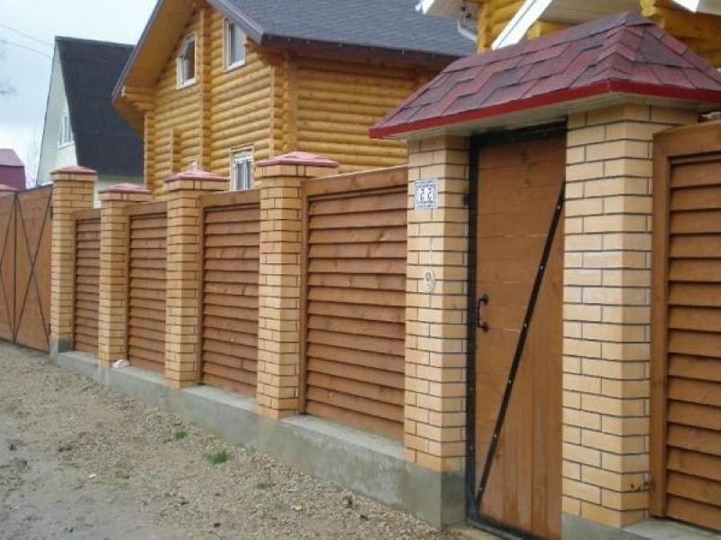
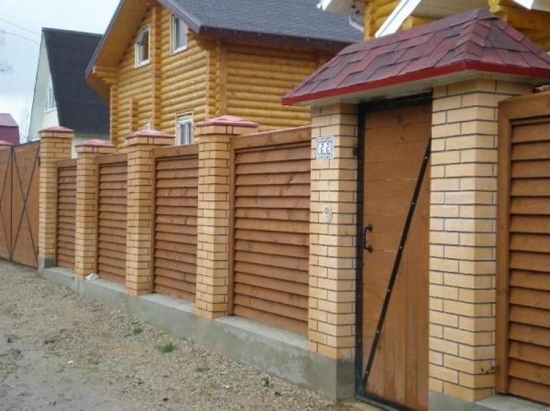
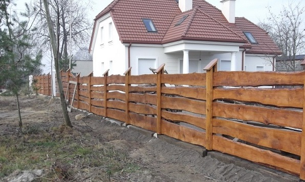
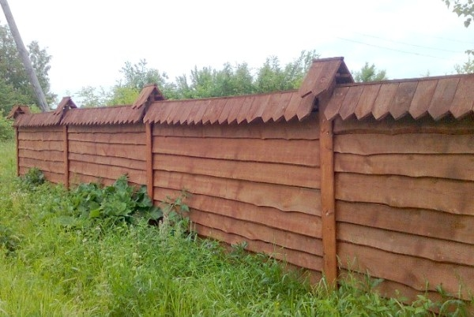
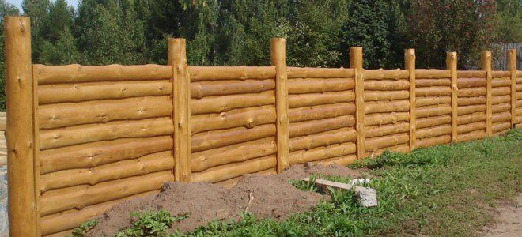
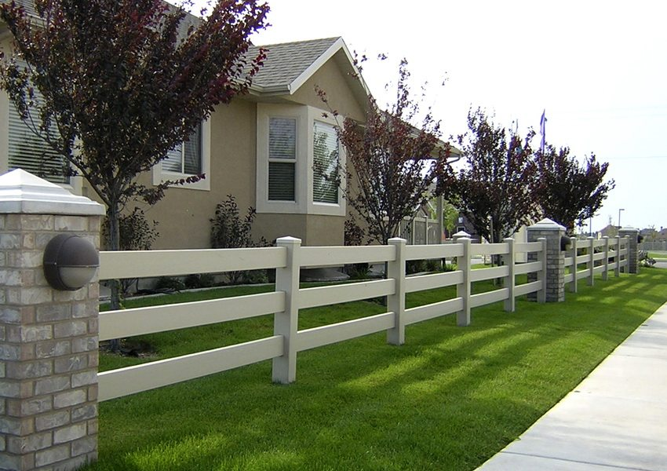
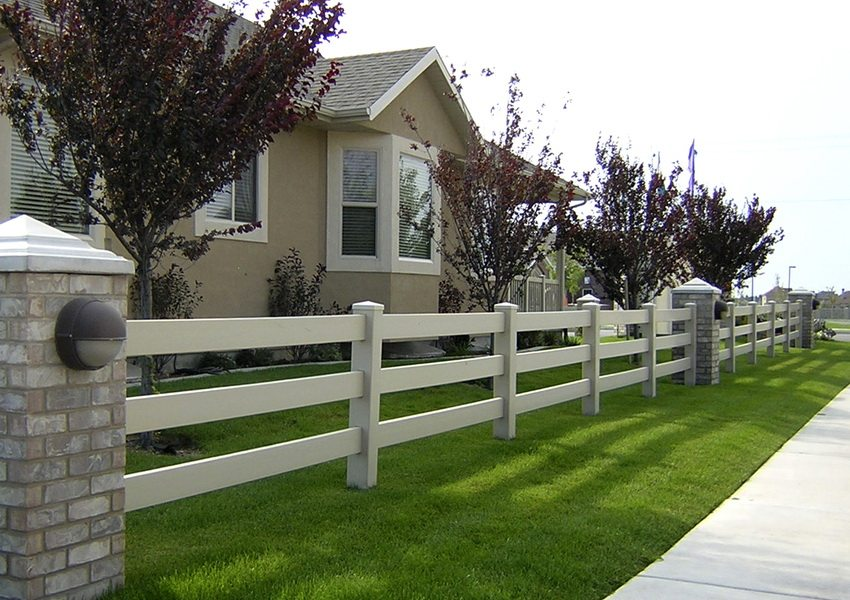

| Деревянный забор, деревяные ограждения. Черновцы. |
|
Деревянный забор / деревяные ограждения. Черновцы.
Невзирая на разнообразие современных строительных материалов дерево - это классика, которая прошла проверку временем. Сегодня считается престижным украшать свой дом деревянными декоративными элементами, или же вообще замахнуться на грандиозный проект, построить красивый деревянный "экко" - дом. Любители всего натурального, как правило, отдают преимущество деревянным окнам и дверям, а настоящая деревянная мебель только дополнит их идентичность.
В статье "Деревянный забор/деревяные ограждения. Черновцы", мы предлагаем вашему вниманию обзор современных заборов из доски и практические рекомендации по их изготовлению. Надеемся, что после знакомства с представленными вариантами вы измените, свое мнение и построите красивый и практический деревянный забор на собственном приусадебном участке.
  
Спрос на деревянный забор (деревяные ограждения) всегда остается высоким. Владельцы загородных участков нередко останавливают свой выбор на деревянных ограждениях, поскольку те владеют рядом неопровержимых преимуществ:
·натуральность. Дерево - экологический природный материал, который владеет уникальным цветом и структурой; ·эстетические качества. Красивый деревянный забор (деревяные ограждения) идеально дополняют любой архитектурный ансамбль в Черновцах;
·невысокая стоимость. В сравнении с другими видами ограждений, теми же кирпичными или железобетонными, деревянный забор (деревяные ограждения) стоят напорядок дешевле. Тем более, что Черновцы имеют собственные мощности пиломатериалов;
·простота изготовления. Монтаж деревянных ограждающих конструкций не предусматривает особенных знаний, умений и навыков. Построить деревянный забор (деревяные ограждения) по силам даже одному человеку; ·разнообразие вариантов. Материалом, для изготовления надежного и красивого ограждения могут выступать любые породы дерева: дуб, бук, сосна, ясень, лиственница.
Среди недостатков деревянных декоративных ограждений можно отметить лишь относительно непродолжительный срок службы, который колеблется в диапазоне 8-10 лет. Определяющими факторами срока службы ограждения являются особенности почвы и климата. Забор приходит в непригодность в результате гниения древесины под действием погодных условий, излишка влаги и поражения вредными насекомыми. Продлить срок службы можно путем обработки поверхности антисептическими и защитными средствами.
Варианты заборов из досок. Для того чтобы установить деревянный забор не нужно напрягать фантазию. Десятки интересных разновидностей ограждений уже построены и отображены на фото.
Самый простой вариант - горизонтальный забор из доски. Его стоимость минимальна, а эстетические качества высокие. Перед установкой, горбилей нужно тщательно отшлыфовать поверхность, тонировать выжиганием и покрыть лаком. В ином случае его внешний вид будет вызывать ассоциации с выгоном для скота.
Еще один совет. Деревянный забор из необрезной доски идеально выглядит с деревянными зданиями. В рассмотренной конструкции прогонки из досок зафиксированы между собой двумя деревянными столбиками. От дождя торцы стоек защищает наклонная планка. Самое уязвимое место - контакт дерева и бетона требует качественной изоляции. Здесь нужно использовать современные пропитки-антисептики или глину с горячим битумом. 
Очень красиво в ограждении смтрится горбиль, очищенный от коры и установлен внахлест. Он прибивается к деревянным столбам. Спереди стык прикрывает доска. Простой в изготовлении навес из дощечек предоставляет конструкции завершенности.
Еще один интересный вариант - "искусственный" горбиль. В этом случае края досок обрезают так, чтобы ониобразовывали симметричный рисунок. Для создания цветного контраста деревянные накладки на столбах обработаны темной морилкой.
Метод "декоративного поворота" одинаково приемлем как для обапола, так и для обрезной доски. В последнем случае мы получаем эстетический вид. При прямом взгляде он выглядит глухим. Однако за счет промежутков между планками такая конструкция нетолько хорошо вентилируется, но и частично пропускает солнечные лучи.
Растения любят такие ограждения и быстро превращают их в цветучие обои. При случае заметим, что наилучшая основа для крепления досок на забор - металлические столбики. Компромиссный вариант - закладка в бетоне стальных обойм из обрезков профильной трубы. В них вставляют деревянные стойки и фиксируют саморезами.
Немного фантазияи и невзрачный горбиль-обапол превращается в дизайнерский штахетник. Столбы для такого ограждения можно нарезать из дешевого кругляка-тонкомера. Естественная форма этого материала идеально впишется в "кантри дизайн", избранный для данного ограждения.
Классический штахетник (строгаемая доска с закругляющим краем) остается актуальным элементом сборной конструкции. Единственное условие - не красьте его зеленой или коричневой краской. Лучше обработайте планки антисептиком и пару раз покройте хорошим лаком. Древесина после этого заиграет золотистыми оттенками и простоит на 10 годов дольше. Если же вам больше нравится тонированная древесина, то используйте для этой цели темно-коричневую краску. Она надежно защитит штахетник от влажности и прибавитему благородного вида. 
Глухой забор из обрезной доски выглядит лучше, когда вертикальные планки установлены не из одного, а из двух сторон внахлест. Такая схема монтажа создает ритмичную ступенчатую структуру. Торцы досок сверху прикрывают строгаемой планкой. Декоративный пояс обрамления монтируют и в нижней части ограждения.
Глухой забор не будет выглядеть скучным, если в его конструктивную схему внедрены арочные решетки из тонкой планки. Арочные вставки-решетки устраняют монотонность глухого забора. Выбирая материал для ограждения, обратите внимание на террасную доску. Она крепка, выразительна и долговечна. Крепят ее к металлическим столбикам, установленным в бетонном фундаменте. Для повышения жесткости в средней части пролет установлены вертикальные брусья.
Такой забор не назовешь дешевым, но он очень долговечен и красив. Террасная доска изготовляется из цветного древесно-полимерного композита и ненуждается в окрашивании.
В данной конструкции доску можно комбинировать с брусом. Ниже мы видим вариант ограждения, в котором брус установлен внешне, а доска прибита изнутри. Ее стыки не заметны, поскольку их прикрывает брус. Коричневая тонировка древесины на контрасте с белым цоколем предоставляет конструкции солидный и добротный вид. Из фасада этот забор сделан сплошным. На боковой стороне ограждения в нижней части доски нет. Такое решение принято для улучшения вентиляции участка.
Украина далеко от Америки, но романтика ковбойских ранчо добралась и до нас. На просторном участке в Черновцах, удаленном от других зданий, отлично выглядит невысокий деревянный забор в стиле кантри. Его основа - толстые деревянные столбы, к которым с одной стороны горизонтально прибивают три пояса из досок. В верхней части деревянную планку пускают крестообразно, закрывая открытые "окна" секций.
  
Плетеные заборы из доски.
Если кто-то скажет вам, что из доски можно плести заборы, не сомневайтесь. Сегодня, плетеный деревянный забор в Черновцах - это самая модная тема. Выглядит плетеный забор из досок чудесно, а вариантов его монтажа существует немало.  
Доска для плетеного ограждения должна быть не очень толстой. Потому, купив на складе обрезную "тридцатку", можете смело простругать ее с обеих сторон до толщины в 25 мм. Оптимальная ширина планки от 8 до 10 см.
Самый простой вариант такого ограждения напоминает стенку летней беседки. По контуру для контраста можно прибить обрамление из темной доски. Деревянная стойка забора бетонируется в почве. А вот другой, не менее интересный вариант плетеного деревянного ограждения. Здесь тонкая строгаемая доска толщиной 25 мм и длиной 2,5 м в шахматном порядке крепится к столбам. Изгибы предоставляют оригинальный способ монтажа: концы досок по очереди крепят по одну и по другую сторону деревянной стойки. В средней части пролета вертикальный рельс, который фиксирует изгиб. Места крепления досок к стойкам прикрыты планками.  
Ничуть не хуже выглядит вертикальное плетение из досок. В этом случае ответ на вопрос какую доску лучше использовать для ограждения, очевидная: на длине в 2 метра легче всего загибается планка, толщиной небольше 16 мм и шириной 8 см.
Плетеный плетень можно улучшить, комбинируя его из штахетником. Подобная конструкция достаточно сложна в монтаже, но ее живописный внешний вид оправдывает все потраченные усилия. И вместе с этим, Ваш ландшафтный дизайн будет выглядеть еще более утонченно.
Оригинальный вариант ограждения, которое сочетает плетение из досок с двусторонним монтажом забора.
Желающим построить эксклюзивный деревянный забор вЧерновцах, или заказать деревяные ограждения необходимо обратиться к опытному мастеру: Черновцы +380509126841, +380970165646. Каждая доска для такого ограждения вырезается отдельно, на основе шаблона секции. На ее торцах и боковых гранях нарезают соединительные шипы, которыми доски по принципу паззлов соединяют между собой, крепят к столбам и к нижнему поясу. Практические рекомендации по монтажу забора из досок. Советы, какие мы дали в статье "Деревянный забор/деревяные ограждения. Черновцы", следует дополнить параметрами основных элементов ограждения из доски: -размер поперечного перереза деревянных столбов -10х10 см; -в случае использования для стоек стального профиля его перерез должен быть не меньше, чем 40х40 мм (стенка 2 мм); - горизонтальные поперечины (прогонки) должны иметь перерез не меньше, чем 30х50 мм при шаге стоек 2 метра; -для удобства монтажа деревянных прогонок, к стальным стойкам нужно приварить крепежные пластины "уха" из висверленими в них отверстиями под саморезы.
На стадии закупки материалов возникает вопрос, как высчитать, сколько досок нужно на забор. Решается это просто. Если ограждение сплошное, то ее общую длину нужно умножить на высоту и толщину доски, которую покупаете.
Еще один важный момент - чем покрасить забор из досок? Если сэкономить на качестве краски, то ограждение придется чаще обновлять. Поэтому рекомендуем покупать дорогую краску для внешних работ. Перед ее нанесением обработайте доску горячей олифой или антисептической пропиткой. Затрата краски и пропитки будет минимальной при нанесении их на строгаемую доску. Учтите этот нюанс при выборе материала.
Учитывая большую площадь ограждения, красить ее нужно валиком или фарбопультом. Пропуски, допущенные во время работы, исправляются малярной кистью. Следовательно, хотите построить деревянный забор в Черновцах? Или смонтировать деревянное ограждение? Заказать материалы, а деревянный забор/ деревяные ограждения сделать сами? Не вопрос, обращайтесь к нашим специалистам: Черновцы +380509126841, +380970165646. |